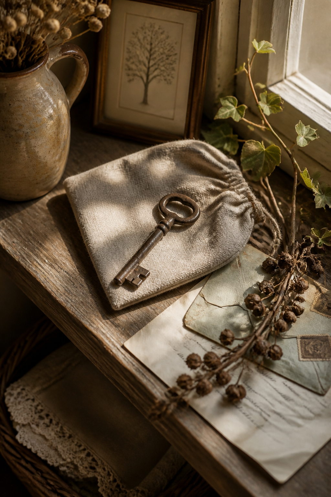
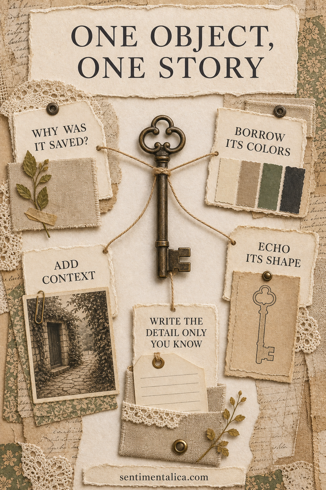
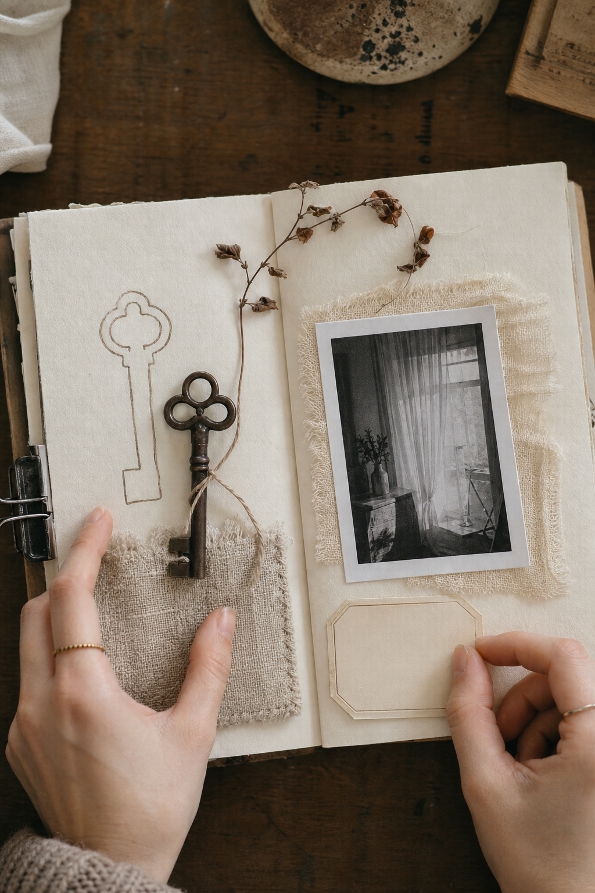

A key, ribbon, receipt, pressed leaf, or handwritten label can hold more atmosphere than a box of coordinated embellishments. Begin with the object and let its material, history, and shape make the creative decisions.


Ask why it was saved
Before arranging the page, write one sentence about the object. Who touched it, where was it found, or why did you keep it? That answer is the real focal point. The design should make the sentence easier to feel.
Borrow the object’s colors
Choose a dark anchor, a light neutral, and one quiet support color from the object or its setting. An old iron key may suggest charcoal, linen, and faded green. Let the neutral occupy most of the page.
Echo its shape once
Trace the object, photograph it, or repeat one part of its silhouette in paper. Do not surround it with many literal copies. A single echo helps the reader notice the relationship without turning the page into a themed display.

Add a photograph of context
The picture does not need to show the object. Use the room, person, journey, or season connected to it. A photograph of a doorway may explain a key more beautifully than a second close-up.
Protect irreplaceable pieces
Place fragile objects in a clear sleeve, glassine envelope, or stitched fabric pocket. Photograph anything too heavy, sharp, or precious for the album. The page should preserve the story without risking the original.
Write the detail only you know
Record the sentence that a future viewer could not guess: the drawer where it lived, the joke attached to it, or the reason you carried it home. Specific writing changes a decorative page into family history.
Leave room around the object
Negative space gives a small item importance. If the page begins to look like a collection tray, remove the least meaningful layer. Texture can come from linen, worn paper, and pencil rather than additional embellishments.
The object does not need to be valuable. Its purpose is to open a door into memory, and the scrapbook page simply gives that memory somewhere to stay.
Image note: Some visuals in this article were created with AI and curated by Sentimentalica.